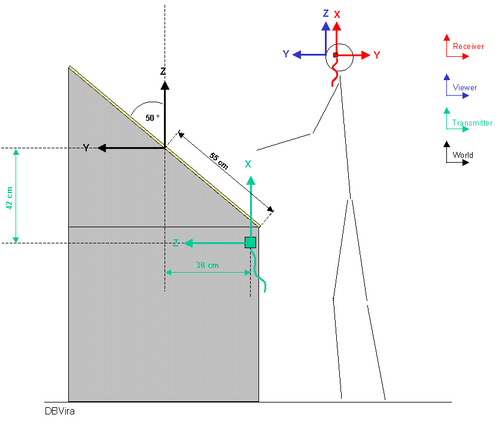

COVER Configuration for the DBVira

Transmitter
The Transmitter is mounted behind the front wall with x-axis up and y-axis right, z axis in
(cable down and the mounting wholes NOT used).
Receiver
The Receiver is mounted in the left side of the stereo glasses. The cable goes down.
Stylus
used for hand
Screen
Workbench Screen, size is 1460 x 1100 mm. The resolution is 1024x768 in 96 Hz Stereo.
Screen angle 50 degree.
covise.config
COVERConfig
{
TRACKING_SYSTEM POLHEMUS
SCENESIZE 1100
NUM_PIPES 1
NUM_WINDOWS 1
AUTO_WIREFRAME OFF
COORD_AXIS ON
FREEZE OFF
STEREO_SEPARATION 60
NOSEPARATION FALSE
TWOSIDE ON
MOVE_PARTS OFF
WELCOME_MESSAGE Welcome to COVER
LOD_SCALE 0
}
WindowConfig
{
# WinNo WinName SoftPipeNo Origin[pixel] Size [pixel]
0 FRONT 0 0 0 1024 768
}
PipeConfig
{
# SoftPipe Screen Display
0 0 :0.0
}
ScreenConfig
{
# ScreenNo ScreenName ScreenSize[mm] ScreenCenter[mm] ScreenOrient hpr [degrees]
0 FRONT 1460 1100 0 0 0 0.0 -50.0 0.0
}
PolhemusConfig
{
SERIAL_PORT /dev/ttyd2 38400
HEMISPHERE 1 0 0
HAND POLHEMUS_STYLUS 1
HEAD POLHEMUS_SENSOR 2
LINEAR_MAGNETIC_FIELD_CORRECTION 0.0 0.0 0.0
TRANSMITTER_OFFSET_POS 0 -38 -42
TRANSMITTER_OFFSET_EULER -90 0 -90
SENSOR_OFFSET_POS 0 0 0
SENSOR_OFFSET_EULER -90 0 -90
STYLUS_OFFSET_POS 0 0 0
STYLUS_OFFSET_EULER -90 0 90
}